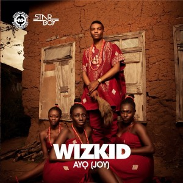
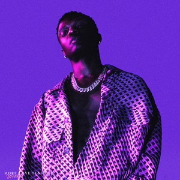

Ayodeji Ibrahim Balogun (born 16 July 1990), known professionally as Wizkid is a Nigerian singer and
songwriter.
A prominent figure in the modern-day afrobeats music scene, Wizkid is regarded as one of the biggest
and most
influential African artists of all time. He began recording music at the age of 11 and released a
collaborative
album with the Glorious Five (5), a group he and a couple of his church friends formed. In 2009,
Wizkid signed a
record deal with Banky W's Empire Mates Entertainment (E.M.E). He later rose to the limelight after
releasing
"Holla at Your Boy", the lead single from his debut studio album, Superstar (2011), which also
spawned the
singles "Tease Me/Bad Guys" and "Don't Dull"
Wizkid was born Ayodeji Ibrahim Balogun on 16 July 1990, in Surulere, Lagos.He grew up in an
interfaith household with
twelve female siblings.His mother is a Pentecostal Christian and his father practices Islam. Wizkid
attended
Ijebu Ode Grammar School.He grew up listening to King Sunny Ade, Fela Kuti and Bob Marley.
In a radio interview with Tim Westwood in 2012, he said that "his father has three wives".
In another interview with Adesope of Factory 78 TV, Wizkid said he formed a group called the
Glorious Five with a couple
of his church friends.They managed to release an album prior to disbanding. Wizkid went by the stage
name Lil Prinz until 2006.[17] He later met OJB Jezreel, a record producer who prevented him from
recording for a year.[16] While visiting OJB's Point Beat Studios frequently, he watched 2 Face
Idibia record songs for his Grass 2 Grace album. He was also present during the recording sessions
for Sound Sultan's debut album Jagbajantis.[18][16] He cited Naeto C as one of the
people who mentored and coached him when he was 15 years old. Wizkid inked a record deal with Empire
Mates Entertainment
in 2009. He co-wrote "Omoge You Too Much", a song from Banky W.'s The W Experience album.He also
worked with Naeto C,
Ikechukwu and M.I while developing his craft.In mid-2009, he dropped out of Lagos State University
(LASU).
He later attended Lead City University, but dropped out after completing two sessions.[18]
In 2012, Wizkid signed a one-year endorsement deal with Pepsi reportedly worth US$350,000.He
travelled to Beirut,
Lebanon, with Tiwa Savage for a Pepsi commercial shoot.[90][91] On 28 May 2013, Premium Times
reported that Wizkid
had signed a one-year deal with MTN Nigeria. The newspaper also reported that Wizkid's Pepsi
contract was renewed for
two more years.[92][93] In November 2013, Wizkid signed an endorsement deal with Guinness for the
Guinness World of
More concert, held at the Eko Convention Centre of the Eko Hotel and Suites on Victoria Island,
Lagos.
In June 2015, Pulse Nigeria reported that Wizkid had left MTN and signed a ₦128 million deal with
GLO
PERSONAL LIFE
In August 2011, Nigerian Entertainment Today reported that the singer fathered his first child at the
age of 21.
After a thorough investigation, the newspaper concluded Wizkid impregnated then-undergraduate
student Sola Ogudugu.
When the story broke, close friends and associates of Wizkid did not confirm it because DNA results
were pending at
the time.Wizkid broke his silence on the story during several interviews. In an interview with a
Nigerian Entertainment
Today editor, he denied having a child.In another interview conducted in Ogudu-GRA, Lagos, he said
he really did
not want to find himself in that peculiar situation.In December 2012, Wizkid denied the baby scandal
during an
interview with Nonye Ben-Nwankwo of The Punch.
In October 2013, he uploaded a picture of himself and his 2-year-old son, Boluwatife Balogun, to his
Instagram account.
The photo confirmed the 2011 report published by Nigerian Entertainment Today.
In an interview with Alex Frank of Vogue magazine in February 2015, Wizkid said he wears a mixture of
streetwear and
traditional Nigerian clothes. He cited Pharrell Williams as one of his fashion style icons.
Moreover, he revealed plans to establish a clothing line following the release of Sounds from the
Other Side.
Wizkid's contributions to the Nigerian music industry have earned him several achievements, including
the Grammy Award
for Best Music Video as a lead artist on Beyoncé's "Brown Skin Girl";his first ever Grammy Award. He
is the
most awarded African artist at the BET Awards (3), Soul Train Awards (3), Billboard Awards (3),
iHeartRadio Music
Awards (2) and MOBO Awards (6).He is also a recipient of an ASCAP plaque for his songwriting
contributions to
Drake's "One Dance",which also earned two Guinness World Records, for being the first song to reach
a billion
streams on Spotify, and at the time being the most streamed song on Spotify.Wizkid was cited as one
of the Top 100
most influential Africans by New African magazine in 2019.He is also the most awarded artiste in The
Headies
award history.He was nominated in the Best Global Music Album and the Best Global Music Performance
categories
in the 64th Annual Grammy Awards for Made in Lagos Deluxe Edition and "Essence" respectively.
In November 2021, Apple Music Awards announced him as the winner of Artist of the Year (Africa).
Superstar is the debut studio album by Nigerian singer Wizkid. It was released by Empire Mates Entertainment
on
June 12, 2011. The album's production was handled by Samklef, E-Kelly, Jay Sleek, Shizzi, DJ Klem,
Masterkraft,
Q-Beats, Banky W and Vebee.[1] It features collaborations with Wande Coal, D'Prince, Banky W and Skales.
The album was supported by the singles "Holla at Your Boy", "Tease Me/Bad Guys", "Don't Dull", "Love My
Baby",
"Pakurumo", and "Oluwa Lo Ni".
It is the second best selling album on NotJustOk and was the most highly anticipated Nigerian album of 2011.
Ayo

Ayo (Yoruba: Joy) is the self-titled second studio album by Nigerian singer Wizkid. It was released on 17
September
2014, by Starboy Entertainment and Empire Mates Entertainment.Ayo was postponed twice due to difficulty in
track
selection.Preceding its release were the singles "Jaiye Jaiye", "On Top Your Matter", "One Question", "Joy",
"Bombay" and "Show You the Money". The album also contains the song "Ojuelegba". Wizkid enlisted Sarz,
Shizzi, Uhuru,
Del B, Dokta Frabz, Maleek Berry, Legendury Beatz and Spellz to produce the album. Ayo features
collaborations with
Femi Kuti, Seyi Shay, Yemi Sax, Akon, Banky W., Phyno, Tyga and Wale. It received mixed reviews from music
critics,
with some commending its production, song arrangement and sound quality, while others panned its lyrics.
Sounds from the Other Side
Sounds from the Other Side (abbreviated as SFTOS) is the third studio album and major label debut by Nigerian
singer
Wizkid. Described by the singer as an EP, the album contains songs that were recorded between 2014 and 2017.
It was released on July 14, 2017, by Starboy Entertainment and RCA Records.Primarily a Caribbean-influenced
record,
SFTOS encompasses several other genres, including Afrobeats, EDM, R&B, and house.The album features guest
appearances from Drake, Major Lazer, Chris Brown, Ty Dolla Sign, Efya, Bucie and Trey Songz.
Its production was handled by Sarz, Del B, Spellz, Dre Skull, DJ Mustard, Major Lazer, and the Picard
Brothers.
Made in Lagos
Made in Lagos is the fourth studio album by Nigerian singer Wizkid. It was released on 30 October 2020 by
Starboy
Entertainment and RCA Records. The album features guest appearances from Burna Boy, Skepta, H.E.R., Ella
Mai,
Tay Iwar, Projexx, Tems, Damian Marley, Terri and was executive produced by P2J. The deluxe edition was
released on
27 August 2021. It features additional guest appearances from Buju and Justin Bieber.[3][4][5] In support of
the
album, Wizkid embarked on the Made in Lagos Tour .
The album received a nomination at the 64th Annual Grammy Awards for Best Global Music Album.
More Love, Less Ego

More Love, Less Ego is the fifth studio album by Nigerian singer Wizkid. It was released on 11 November 2022
through RCA Records and Starboy Entertainment. The album features guest appearances from Ayra Starr,
Skillibeng,
Shenseea, Skepta, Naira Marley, and Don Toliver. Production was handled by P2J, Kel-P, KDaGreat, Sammy Soso,
P Priime, Juls, Kofo, and Euro. It serves as the follow-up to Wizkid's previous album, Made in Lagos (2020).
The album was supported by two singles, "Bad to Me", and "Money & Love". More Love, Less Ego is a pop, R&B,
and
Afrobeats album that includes lyrics about falling in love with women and engaging in sexual activity.
According to Wizkid, he named the album the way it is because "everyone fights with their ego and that's
where
I'm at",explaining that "I'm still trying to shed my ego, like everyone else".